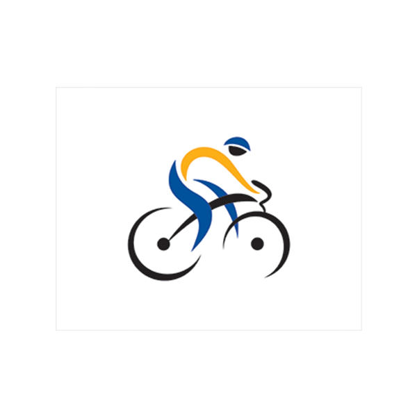
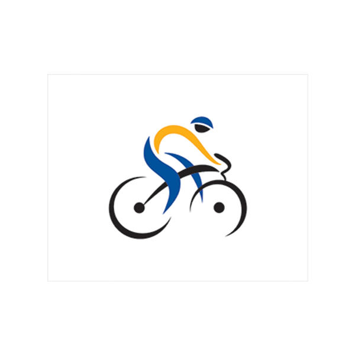
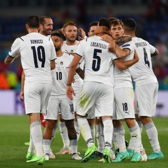

 o ya Euro yatangiye saa tatu z’ijoro ku isaha y’i Kigali. U Butaliyani bwari mu rugo, bwakiriye Turikiya buyitsinda buyirusha ku kigero cyo hejuru nubwo igice cya mbere cyarangiye amakipe yombi anganya ubusa ku busa. U Butaliya butozwa na Roberto Mancini bwafunguye amazamu mu gice cya kabiri kigitangira ku mupira wahinduwe ku ruhande rw’iburyo maze Merih Demiral akitsinda. Ciro Immobile wari umaze igihe kinini adatsindira u Butaliyani, yaje kubonera igihugu cye igitego cya kabiri cyabonetse ku munota wa 66 mu gihe Lorenzo Insigne yaje gushimangira intsinzi ku munota wa 79 umukino urangira utyo. Ni umukino wihariwe cyane n’u Butaliyani ariko Turikiya yakinaga isa n’iyugarira igobokwa n’umuzamu wayo Ugurcan Cakir inshuro zitari nke. Ibirori byo gufungura iri rushanwa byasusurukijwe na Andrea Bocelli, umwe mu bahanga Isi ifite muri muzika. Ni umugabo ufite ubumuga bwo kutabona uvuka mu Mujyi wa Tuscany mu Butaliyani.